1. What is Metal Forming?
Metal forming shapes metal through mechanical deformation — there is neither addition nor removal of material. The mass of the workpiece remains the same throughout.
⚠️ Key law: Volume is conserved. Material is only redistributed — never added or removed.
How Deformation Works
- Stresses must exceed the yield stress to cause permanent (plastic) deformation
- Most bulk forming processes use compressive stresses (rolling, forging, extrusion)
- Some processes use tensile stresses (drawing)
- Some processes use bending (tensile + compressive) or shear stresses
Effect of Temperature on Material
- Higher temperature → yield stress decreases → easier to deform
- Higher temperature → ductility increases → less risk of cracking
- Hot forming converts a cast structure into a wrought product with finer grains and better ductility
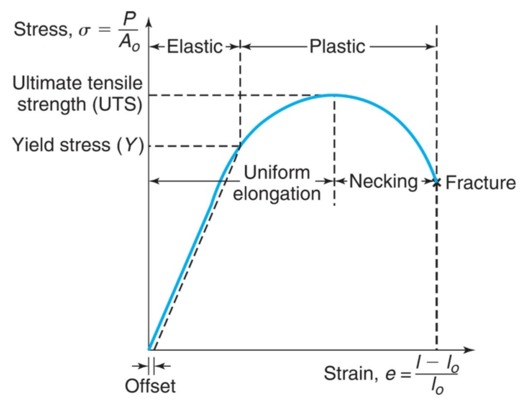
Fig 1.1 — Engineering stress–strain curve: elastic region, yield point, UTS, necking & fracture
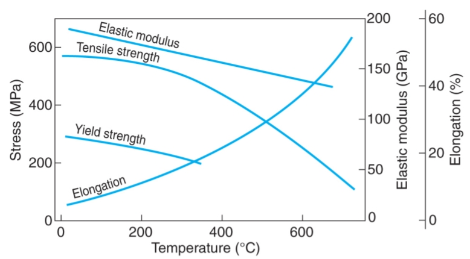
Fig 1.2 — Effect of temperature on material properties: strength drops, ductility rises
Two Major Categories
| Category | Characteristic | Processes |
|---|---|---|
| Bulk Deformation | Massive shape changes; low surface-to-volume ratio | Rolling, Forging, Extrusion, Wire Drawing |
| Sheet Metalworking | Thin flat sheets; geometry dominated by surface area | Bending, Deep/Cup Drawing, Shearing |
2. Rolling
Rolling reduces the thickness or changes the cross-section of a long workpiece by compressive forces through rotating rolls. It accounts for 90% of all metals produced by metalworking and was first developed in the late 1500s.
Plates vs Sheets
| Product | Thickness | Real-World Examples |
|---|---|---|
| Plate | > 6 mm | 300 mm for boiler support; 150 mm for reactor vessel; 100–125 mm for battleship/tank armour |
| Sheet | < 6 mm | 1 mm for aircraft fuselage; 0.28 mm for beverage cans; 0.008 mm for aluminum foil |
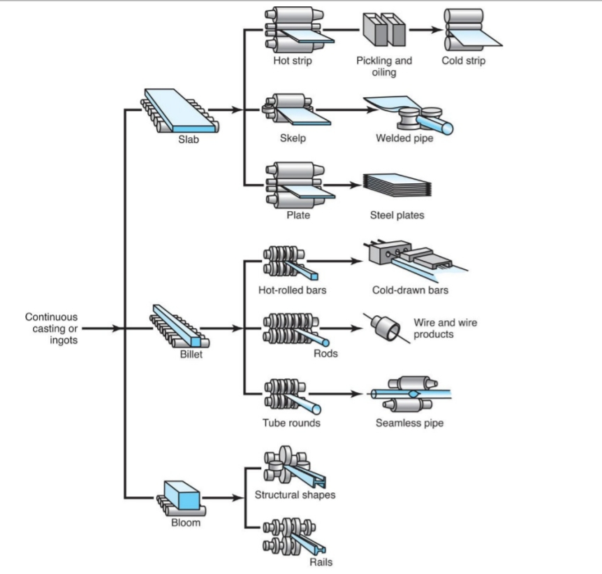
Fig 2.1 — Rolling product flow: from continuous casting to final rolled products
Types of Rolling (By Geometry)
- Flat Rolling — reduces thickness of a rectangular cross-section
- Shape Rolling (Profile Rolling) — forms stock into shapes such as I-beams, channels, and railroad rails; heated stock passes through pairs of specially shaped rolls
- Ring Rolling — reduces wall thickness of a ring, causing its diameter to increase; produces seamless rings (bearing rings, turbine disks, gear blanks)
- Thread Rolling — cold forming process to form straight or tapered threads on round rods or wires
- Skew Rolling — produces balls for ball-bearings
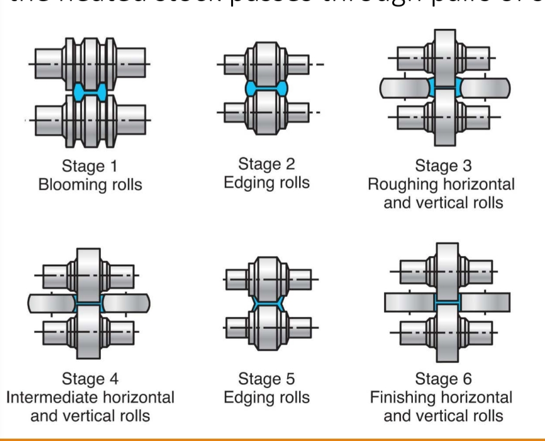
Fig 2.2 — Shape rolling stages: 6-pass sequence from bloom to finished structural profile
Thread Rolling vs Thread Cutting — Key Exam Point
Unlike machining, which cuts through the grains, thread rolling imparts improved strength because the favorable grain flow is preserved and follows the thread profile. Machined threads sever grain lines; rolled threads align them.
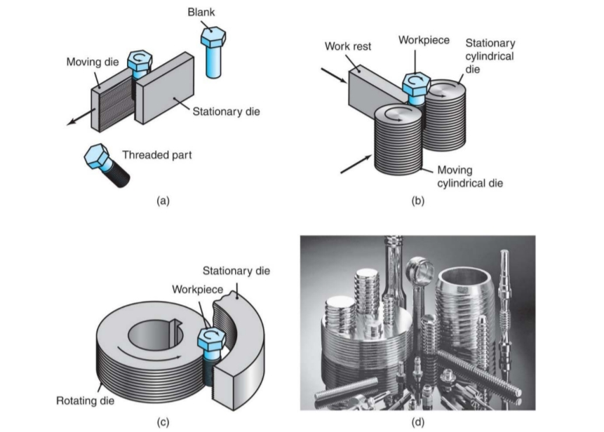
Fig 2.3 — Thread rolling methods: (a) flat die, (b) cylindrical die, (c) planetary die; (d) typical products
Seamless Tube and Pipe Production
When compressive forces are applied radially to a solid round bar, tensile stresses develop at the center, creating a cavity. This is exploited in the rotary tube piercing process to manufacture seamless pipes and tubing.
Hot Rolling vs Cold Rolling
| Feature | Hot Rolling | Cold Rolling |
|---|---|---|
| Temperature | Above recrystallization (~50% of melting temp); typically 450°C for Al, up to 1250°C for alloy steels, up to 1650°C for refractory alloys | Room temperature or slightly above |
| Deformation | Larger deformation per pass | Less deformation per pass |
| Accuracy | Less accurate (lower tolerances) | Tight tolerances |
| Surface finish | Scaling required; rough surface | Better surface finish |
| Energy | Lower rolling energy | Higher rolling energy |
| Grain structure result | Converts cast structure → wrought; finer grains; closes porosity | Strain hardening; ductility limits forming amount |
| Machining afterwards? | Often required | Minimum or no machining needed |
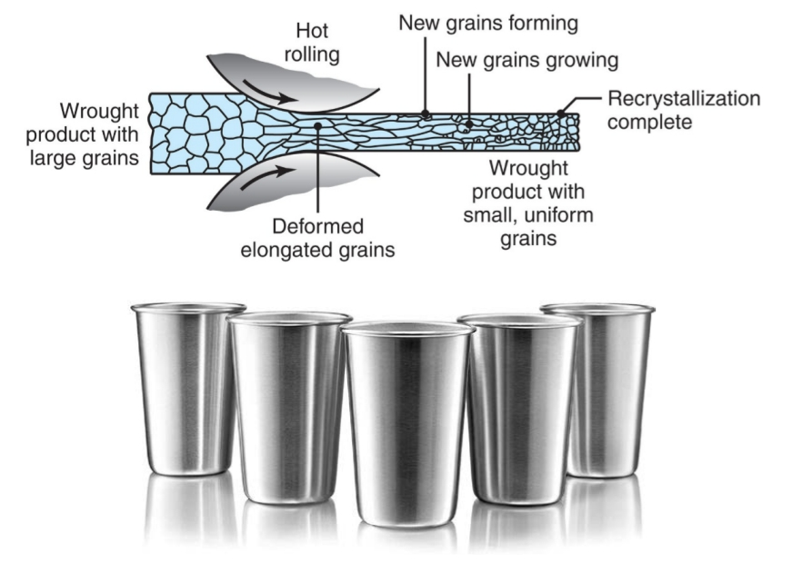
Fig 2.4 — Hot rolling grain evolution: cast → deformed elongated → recrystallized fine uniform grains (wrought product)
Reducing Roll Force
High roll forces cause roll deflection and roll flattening, both of which harm the rolling operation. Force can be reduced by:
- Reducing friction
- Using smaller diameter rolls (reduces contact area)
- Taking smaller reductions per pass
- Rolling at elevated temperature (reduces material strength)
- Applying longitudinal tension to the strip during rolling
Roll Materials
- Must have strength and resistance to wear
- Three common materials: cast iron, cast steel, forged steel
- Cold rolling rolls are ground to a fine finish; for special applications, they are polished
Roll Deflection
Under transverse load, rolls can deflect, producing strips thicker in the center than the edges. To compensate, rolls are ground with a smaller diameter at the edges (crowned rolls).
Rolling Defects
- Wavy edges — result of roll bending (non-uniform deformation; edges elongate more)
- Zipper cracks — cracks in the center of the strip
- Edge cracks — due to poor material ductility at rolling temperature
- Alligatoring — catastrophic internal splitting along the mid-plane; caused by non-uniform deformation through thickness or defects in the original cast material
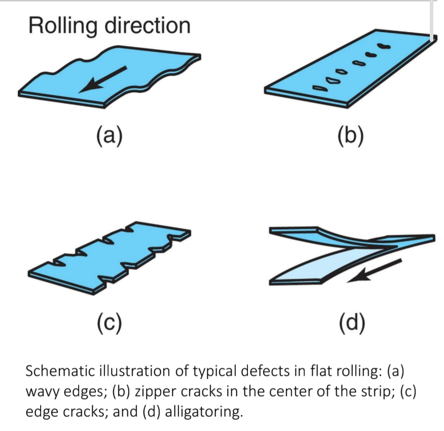
Fig 2.5 — Flat rolling defects: (a) wavy edges, (b) zipper cracks, (c) edge cracks, (d) alligatoring
3. Forging
Forging is one of the oldest metalworking operations (8,000 B.C.). The workpiece is shaped by compressive forces applied through dies and tools. Simple forging was done by hand hammer and anvil (blacksmith); modern forging uses heavy presses and precision dies.
💪 Why forged parts are strong: Forging produces favorable grain flow — grain lines follow the shape of the finished part — giving superior strength and toughness compared to cast or machined equivalents.
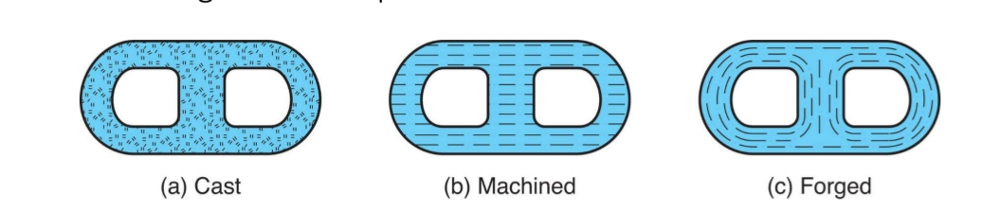
Fig 3.1 — Grain flow comparison: (a) cast — random, (b) machined — severed, (c) forged — continuous & follows part shape
Critical Applications of Forging
Forging is used where high stress and reliability are required:
- Landing gear (C5A Galaxy, Airbus A350 XWB)
- Jet engine shafts and disks
- Crankshafts and connecting rods
- Structural links and bridge chains (e.g., 5/6 Arch Doha — all links are likely forged)
- Bevel pinions, bearing fittings, shafts
Types of Forging
| Type | Description | Flash? | Notes |
|---|---|---|---|
| Open-Die Forging | Workpiece compressed between two flat dies; metal flows laterally with minimum constraint | Uncontrolled excess | Parts typically 15–500 kg; up to 275 tons possible; shafts up to 23 m long (ship shafts) |
| Closed-Die Forging (Impression-Die) | Die contains a cavity; workpiece acquires the shape of the die impressions; metal flow constrained | Yes — trimmed afterwards | Connects rod, gears, complex near-net shapes |
| Flashless Forging | Metal completely constrained in fully enclosed die | None | Near-net shape; no material waste |
Stages of Closed-Die Forging (Connecting Rod Example)
- 1. Edging — defines the dimensions of the part
- 2. Blocking — distributes and reserves material for the part geometry
- 3. Finishing — imprints fine details of the part into the cavity
- 4. Trimming — removes the flash
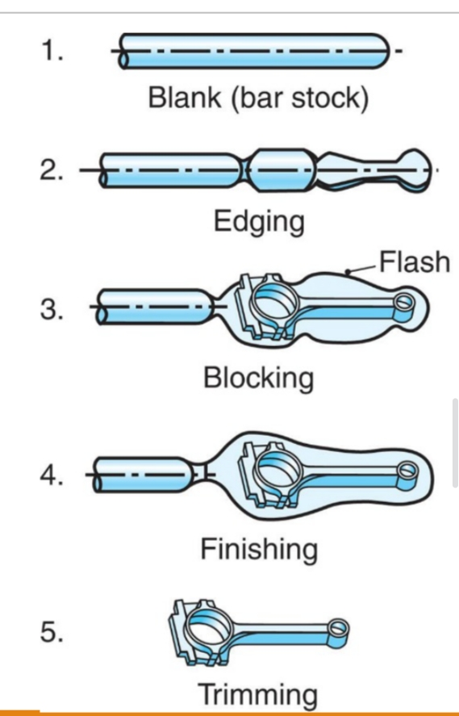
Fig 3.2 — Closed-die forging sequence for a connecting rod: blank → edging → blocking → finishing → trimming
Open-Die Forging: Cogging
Cogging reduces the thickness of a bar by successive forging steps at intervals — like a blacksmith hammering a bar on an anvil in steps along its length.
Open-Die Forging: Upsetting (Barreling)
When a cylinder is compressed between flat dies, friction at the interfaces resists flow at the contact surfaces while the middle is free to flow — causing the sides to bulge outward. This is called barreling. It can be minimized with effective lubrication.
Impact Forging vs Press Forging
- Impact forging — forge hammer applies a rapid impact force
- Press forging — forging force is applied gradually and continuously
Hot Forging vs Cold Forging
| Feature | Hot Forging | Cold Forging |
|---|---|---|
| Temperature | Elevated (warm or hot) | Room temperature |
| Force required | Smaller forces | Greater forces; workpiece must have sufficient ductility |
| Surface finish | Not as good | Good surface finish |
| Dimensional accuracy | Lower | Good dimensional accuracy |
Both types generally require additional finishing: heat treatment to modify properties and machining for accurate final dimensions.
Forging Die Design Rules
- Most important rule: material flows in the direction of least resistance
- Parting line is usually at the largest cross-section of the part
- Draft angles are mandatory for removal of the part from the die without damage
- Die distortion must be considered for close tolerances
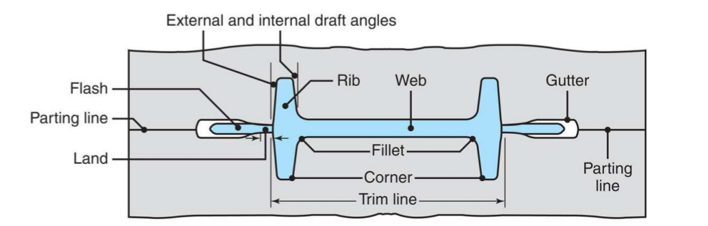
Fig 3.3 — Closed-die anatomy: flash, gutter, parting line, land, rib, web, fillet, corner, and draft angles
Forging Defects
- Insufficient material — web may buckle and develop laps
- Too much material — excess material flows past forged portions, creating internal cracks
- Internal defects also arise from non-uniform deformation or temperature variations through the workpiece
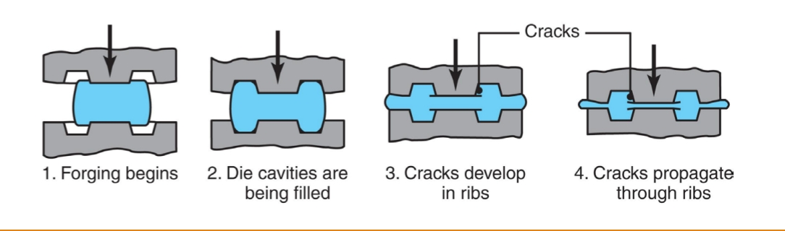
Fig 3.4 — Forging defect progression: cavity filling → crack nucleation in ribs → crack propagation
Forging Economics
Setup and tooling costs per piece decrease as the number of pieces increases (same die). High initial investment but very cost-effective at volume.
Advantages and Limitations of Forging
✔ Advantages vs Machining
- Higher production rate
- Less material waste
- Greater strength
- Favorable grain orientation
✗ Limitations
- Not capable of close tolerances directly
- Machining often required afterwards
Special Forging Operations
- Coining — closed-die forging for minting coins, medallions, and jewelry; also used for marking parts with letters and numbers
- Rotary Swaging — reduces the diameter of rods and tubes using rapidly reciprocating dies; can form internal profiles on tubes using shaped mandrels; produces tapered shafts and shaped tubes; can be done with or without a mandrel
Forgeability
Forgeability is the capability of a material to undergo deformation without cracking. Higher forgeability = more complex shapes achievable.
4. Extrusion
In extrusion, material is forced through a die opening by a ram — like squeezing toothpaste from a tube. The output is a part with a constant cross-sectional profile.
🔑 Defining feature: Since the die geometry doesn't change, extruded products always have a constant cross-section throughout their length.
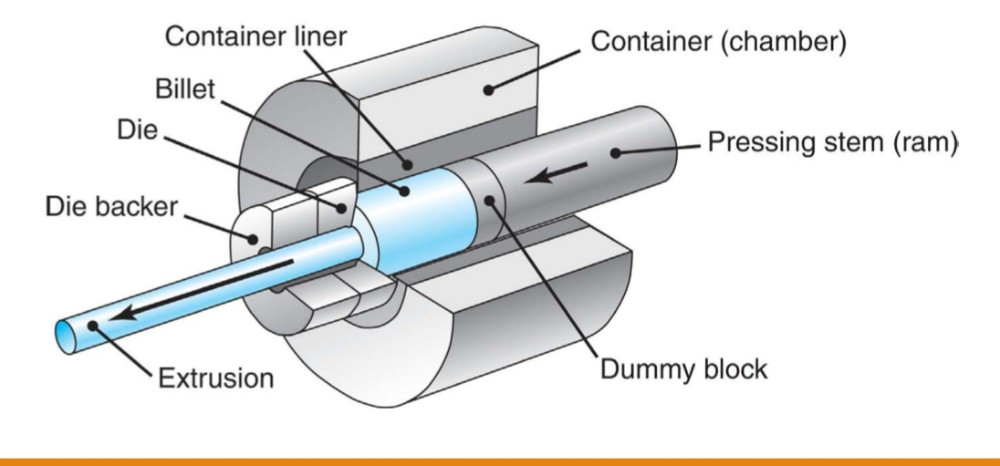
Fig 4.1 — Direct (forward) extrusion: ram pushes billet through stationary die
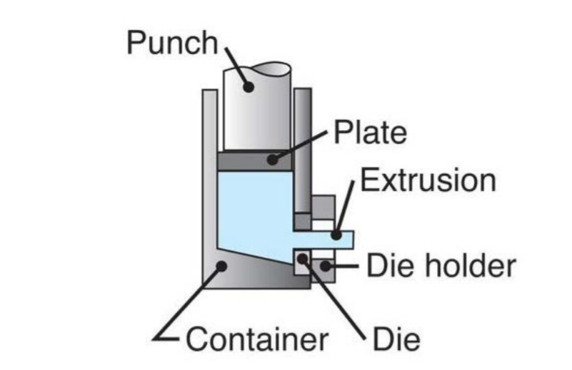
Fig 4.2 — Lateral/side extrusion: product exits perpendicular to ram direction
Extruded Products
- Almost any solid or hollow cross-section can be produced
- Door and window frames, railing for sliding doors, tubing, structural and architectural shapes
- Heat sinks for printed circuit boards
- Parts designed for snap-fit, keyed, cylindrical sliding, and lap-lock assembly
Types of Extrusion
| Type | Mechanism | Friction | Notes |
|---|---|---|---|
| Direct (Forward) | Billet placed in container; ram forces billet through die in same direction as output | High — billet slides along container wall | Most common type |
| Indirect (Backward/Reverse) | Die moves toward stationary billet; no billet-container relative motion | None along container wall → lower force needed | Supporting extruded product as it exits is difficult |
| Lateral / Side | Product exits at an angle to the ram | — | Suitable for low melting point metals |
| Hydrostatic | Billet smaller than container, which is filled with pressurized fluid | None — fluid transmits force; no billet-wall contact | Cold extrusion only; holding pressure is difficult |
| Impact Extrusion | Punch descends rapidly on a blank; material extruded backward (similar to indirect) | — | Cold extrusion category; toothpaste tubes, caps, small containers |
Extrusion Practice
- Aluminum, copper, magnesium and their alloys, plus steels and stainless steels — extruded with relative ease into many shapes
- Titanium and refractory metals — can be extruded but with difficulty and considerable die wear
- Extrusion ratios typically 10:1 to 100:1; up to 400:1 for special applications; lower for less ductile materials
- Economical for both large and short production runs
- Tool costs are generally low for simple solid cross-sections
Design for Extrusion
- Eliminate sharp corners — use fillets and radii
- Keep section thicknesses as uniform as possible
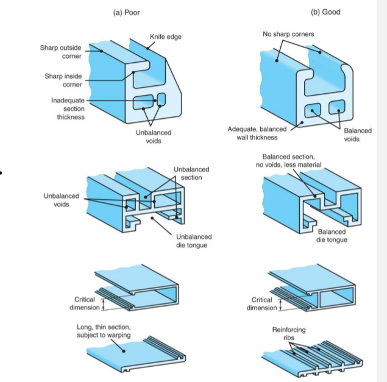
Fig 4.3 — Extrusion cross-section design: (left) poor — sharp corners, unbalanced walls, thin warping; (right) good — rounded, balanced, reinforced
Advantages and Limitations
✔ Advantages
- Wide variety of shapes (especially hot extrusion)
- Grain structure and strength enhanced
- Close tolerances possible (cold extrusion)
- Little or no material waste
- Enables assembly-friendly cross-sections
✗ Limitations
- Part cross-section must be constant (uniform) throughout its length
5. Wire Drawing & Rod Drawing
In drawing, the cross-section of a round rod or wire is reduced by pulling it through a die using tensile force. This is the critical distinction from extrusion.
🔑 Extrusion = PUSH (compressive force). Drawing = PULL (tensile force).
Key Variables in Drawing
- Reduction in cross-sectional area
- Die angle
- Friction along the die–workpiece interface
- Drawing speed
Maximum Reduction per Pass
- Maximum reduction per pass is ideally 63%
- Beyond this, the product undergoes further uncontrolled deformation after leaving the die
- Example: a 10 mm diameter rod can be reduced to at most 7.93 mm in one pass
Multi-Stage Wire Drawing
- Very long wires (many kilometres) and cross-sections smaller than 13 mm are drawn using a multistage machine
- Wire passes through a series of rotating drums with progressively smaller dies
- Classic application: copper wire for electrical wiring
Applications
- Electrical wire · Steel cable · Nails · Rods · Tubes · Precision bars
6. Sheet Metalworking
Sheet metalworking processes work on thin flat sheets (thickness < 6 mm). The three main categories are bending, deep/cup drawing, and shearing.
Bending
- Outer surface of the bend → tension; inner surface → compression
- Springback — elastic recovery after bending force is removed; the die must overbend to achieve the final desired angle
- Too tight a bend radius → cracking on the outer (tensile) surface
Deep Drawing (Cup Drawing)
- Flat blank is drawn into a cup or box shape by a punch and die
- A blank holder applies force to the sheet flange to prevent wrinkling
- Too little blank-holder force → wrinkling of the flange
- Too much blank-holder force → tearing of the cup wall
Shearing
- Blanking — the cut-out piece IS the desired product (e.g., disc blanks)
- Punching / Piercing — the hole remaining in the sheet IS the product; slug is scrap
- Clearance between punch and die critically affects cut edge quality
7. Process Selection Quick Guide
| Need | Best Process |
|---|---|
| Highest strength + best grain flow | Forging (closed-die or flashless) |
| Long uniform cross-section profile | Extrusion |
| Small diameter wire / precision rod | Wire/rod drawing |
| Flat sheet or plate production | Rolling |
| Structural sections (I-beams, rails) | Shape rolling |
| Seamless bearing rings / flanges | Ring rolling |
| Balls for ball-bearings | Skew rolling |
| Stronger threads than cutting | Thread rolling |
| Coins, medallions, jewelry | Coining (forging) |
| Tapered rods / shaped tubes | Swaging |
| Seamless pipe / tube | Rotary tube piercing |
| Cup / box shaped parts from sheet | Deep drawing |
| Best surface finish + tightest tolerances | Cold forming |
| Minimum force / energy | Hot forming |
Overall Process Comparison
| Process | Force Type | Hot/Cold | Key Output | Grain Alignment |
|---|---|---|---|---|
| Rolling | Compressive | Both | Plate / sheet / profiles | Moderate |
| Forging | Compressive | Both | 3D near-net shapes | Excellent — follows part |
| Extrusion | Compressive | Both | Constant cross-section | Good |
| Wire Drawing | Tensile | Cold (mostly) | Wires / rods | Good |
| Thread Rolling | Compressive | Cold | Strong threads | Excellent (around thread) |
| Swaging | Compressive (radial) | Both | Tapered rods / shaped tubes | Good |
| Deep Drawing | Tensile + Compressive | Cold | Cups / cans | N/A |
| Bending | Bending moment | Cold | Bent sheet parts | N/A |